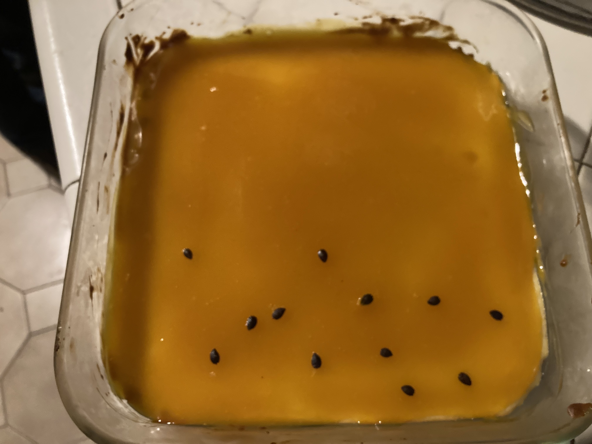

Lilikoi (Passion Fruit) Cheesecake Bars¶
Ingredients
For the crust:
1 pack Graham crackers
1/3 cup butter, melted
For the cheesecake filling:
2 eggs
2 8-oz packs of cream cheese
1/3 cup sugar
1 tsp vanilla
For the topping:
1/2 cup lilikoi juice
3 (?) Tbsp cornstarch
~1/3 cup sugar
Mash up the graham crackers, mix with melted butter, and press into an 8 x 8 pan (going up some on the sides if you want). Refridgerate. Preheat oven to around 325 degrees Fahrenheit. Mix the filling ingredients together. Pour into crust and bake ~15 minutes, until the filling has set (one recipe said a thermometer inserted about 1 inch from the edge should be at 180 F). Cool. For the topping, mix the sugar and cornstarch in a bowl on the side. Heat up the lilikoi juice in a pan and add the sugar and cornstartch mixture. Bring to a boil and let cook while mixing continuously for a couple minutes to remove the cornstarch flavor. Remove from heat and let cool. Pour the topping over the cheesecake layer after both have cooled, ideally before the topping has fully set. Can decorate the top with lilikoi seeds if desired. Refrigerate together before serving.
{kind=link}

Note
My first attempt used this tart crust, and this cheesecake tart. It was ok, but I like the Graham cracker crust much better. I’d have to compare the two lilikoi toppings since I really like both on their own, but the one currently in this recipe seemed to work well with cheesecake bars. I’d be curious to try one of the cheesecake recipes with sour cream. I was happy with this one (if I remembered the amounts correctly), so I don’t think it needs to be changed, but it’s also the part of this recipe I’m the least certain about since I don’t have a go-to cheesecake recipe. I also may be completely misremembering how long it cooked for and the temperature, so that culd be investigated more.
Section author: Tori